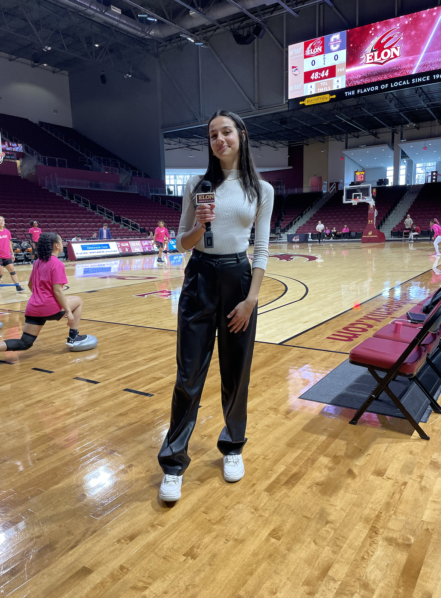
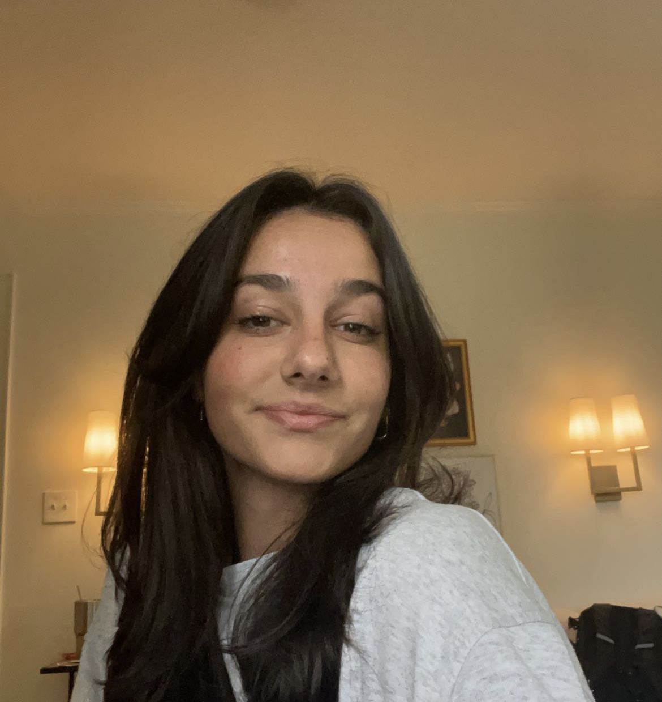
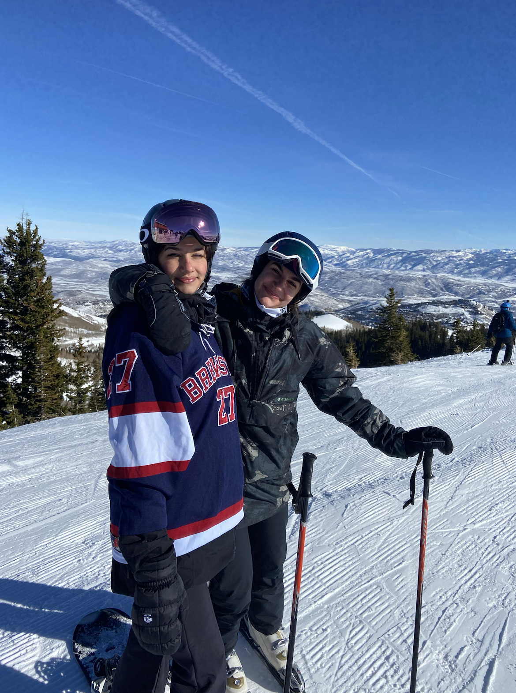

Before Attending Elon University, I graduated from a boarding school in New Hampshire called Brewster Academy. While at Brewster, I earned the Dartmouth Book Award for my advanced writing ability, and managed the Mens Varsity Soccer Team and Mens Varsity Lacrosse Team. Outside of school I have worked in abundance in the resturaunt business as a hostess, servers assitant, and waitress. I hosted and was a servers assitant at Mellow Mushroom, and was a server at ROCK SALT and Salt Life Food Shack. I also have sales experience working as a footwear sales associate as Dicks Sporting Goods. I am currently employed as a sports broadcaster for Elon Sports Vision, and as a Team Lead for Elon New Student Programs.
My name is Sydney Caldwell. I am 19 years old and a sophomore at Elon University.
I was born and raised in Charlotte North Carolina, but spent the last summer living in Jacksonville, Florida with my two best friends. I have two sisters, one older,Shelby, and one younger, Tanner, and a dog named Brecken. My family means the world to me, and I always have the best time with them. I really enjoy playing and watching basketball, collecting shoes, hanging out with my friends and family, listening to music, snowboarding, working out and traveling. My favorite place I ever traveled was to Moshi, Tanzania on a hiking trip where I got to hike Mount. Kilimanjaro. My favorite genre of music is R&B and my favorite song is Forever by Jessie Reyez and 6LACK.
